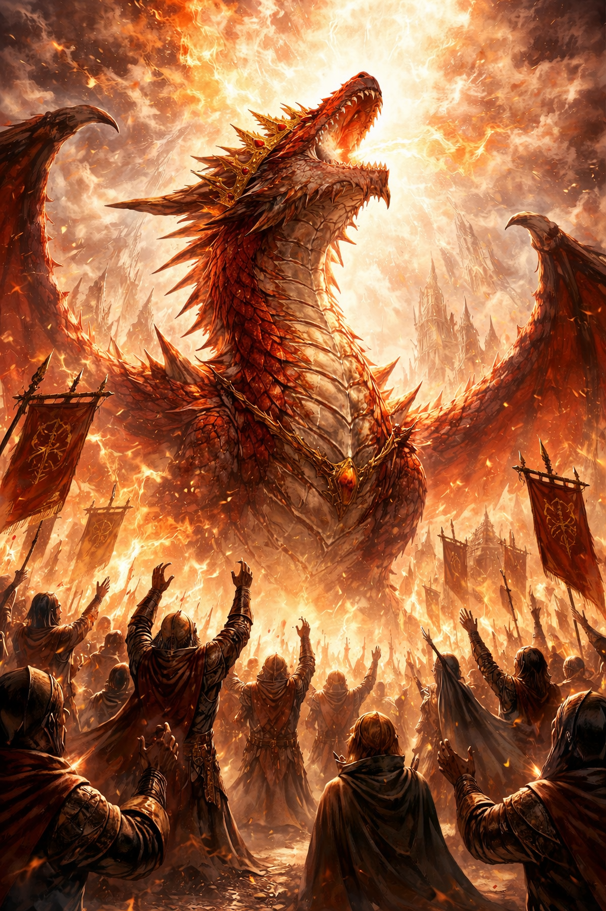

🐉 Reino do Grande Deus Dracarys
Acima das nuvens, fé e poder se tornam uma só coisa.

📜 Sobre o Reino
Muito antes de sua atual forma, essa terra já existia — dizem que era governada por uma sílfide devota à deusa Wynna. Mas tudo mudou quando um dragão ambicioso tomou o controle e passou a exigir devoção absoluta. Hoje, Dracarys é cultuado como um deus vivo. O reino prospera sob sua presença: terras férteis, abundância de recursos e uma população que, em sua maioria, vive sem necessidades básicas. Mas essa prosperidade vem com uma condição clara — fé absoluta.
🏛️ Teocracia Absoluta
O reino é uma teocracia governada diretamente por Dracarys, um semideus dragão cuja autoridade é incontestável. A administração das cidades é realizada por seus clérigos, responsáveis por manter a ordem, garantir a devoção e aplicar as leis do culto. A economia é baseada na fertilidade incomum da terra e na abundância de recursos, o que garante estabilidade e reduz desigualdades materiais entre a população. No entanto, a liberdade é limitada: cultuar outros deuses é considerado um crime grave, e qualquer oposição ao regime é severamente punida. A estabilidade do reino depende da fé — e da vontade de Dracarys.
📍 Locais Importantes
- • Capital de Dracarys — O centro político e religioso do reino. Abriga o grande templo onde Dracarys reside, além de diversas estruturas dedicadas ao seu culto.
👥 Personagens Importantes

🐉 Dracarys
Deus-Rei Dragão
Dracarys é o soberano absoluto do reino flutuante e a própria razão de sua existência atual. Um dragão antigo que ascendeu ao status de semideus, ele conquistou o território e impôs sua própria fé sobre todos que ali habitavam.
Imenso e imponente, raramente deixa seu templo — não por fraqueza, mas porque seu poder já é sentido em todo o reino. É adorado como um deus vivo por seus seguidores.
Sua generosidade recompensa os fiéis… sua ira consome os que ousam duvidar.